NHỮNG THAY ĐỔI TRÊN BẢN ECUS5VNACCS 2018
(Phiên bản update 10/08/2020)
Phần mềm ECUS5VNACCS2018 - Ngày phát hành 24/08/2020
Phiên bản cập nhật ngày 10/08/2020 được phát hành ngày 24/08/2020 bổ sung chức năng THANH LÝ THEO ĐỊNH MỨC GIAI ĐOẠN cho loại hình SXXK với nội dung như sau.
Theo Quyết định 2270/QĐ-TCHQ ban hành ngày 09 tháng 08 năm 2018 của Tổng cục Hải quan về định dạng thông điệp dữ liệu trao đổi giữa Hải quan và doanh nghiệp Gia công, Sản xuất xuất khẩu, Chế xuất. Cho phép doanh nghiệp khai báo được nhiều lần định mức cho cùng một mã Sản phẩm dựa vào các Lệnh sản xuất khác nhau.
Vậy, cùng một mã Sản phẩm xuất khẩu nhưng có nhiều bảng định mức khác, đến kỳ báo cáo doanh nghiệp làm thế nào để kiểm soát được số liệu chi tiết khi thực hiện chạy thanh lý, thanh khoản. Chức năng CHẠY THANH LÝ THEO ĐỊNH MỨC GIAI ĐOẠN sẽ giúp doanh nghiệp thực hiện bằng cách gán các lệnh sản xuất cho các sản phẩm xuất khẩu cụ thể trên từng tờ khai xuất.
Chức năng chạy thanh lý theo định mức giai đoạn sẽ bao gồm các bước thực hiện sau:
- Bước 1: Thiết lập cấu hình chức năng.
- Bước 2: Kiểm hóa tờ khai nhập khẩu/ xuất khẩu.
- Bước 3: Cập nhật lệnh sản xuất cho sản phẩm trên tờ khai xuất.
- Bước 4: Tạo lần thanh lý và nhập bảng kê danh sách tờ khai
- Bước 5: Chạy thanh lý.
- Bước 6: In báo cáo thanh lý.
- Bước 7: Đóng hồ sơ thanh lý.
Trong các bước ở trên, chỉ có bước 1, 3 và 6 là có sự khác biệt so với việc chạy thanh lý thông thường (thanh lý không có định mức giai đoạn). Các bước còn lại về ý nghĩa và cách thực hiện đều giống hệt với cách chạy thanh lý thông thường mà doanh nghiệp vẫn đang sử dụng.
Để hiểu rõ hơn, chúng ta hãy theo dõi phần hướng dẫn chi tiết của các bước 1, 3 và 6 (Để xem đầy đủ 7 bước thực hiện, bạn vui lòng
xem tại đây hoặc truy cập vào mục
5.4.Thanh lý, thanh khoản/ Thanh lý SXXK/ Thanh lý theo định mức giai đoạn):
Bước 1: Thiết lập cấu hình chức năng.
Mặc định, phần mềm sẽ không hiện thị các chức năng cho phép doanh nghiệp chạy thanh lý theo định mức giai đoạn, do đó muốn thực hiện, doanh nghiệp phải thiết lập cấu hình trước, bằng cách vào menu Hệ thống/ Thiết lập thông số chương trình, sau đó đánh dấu chọn vào Thực hiện thanh lý theo giai đoạn tại mục 8. Thanh lý, thanh khoản như hình sau:
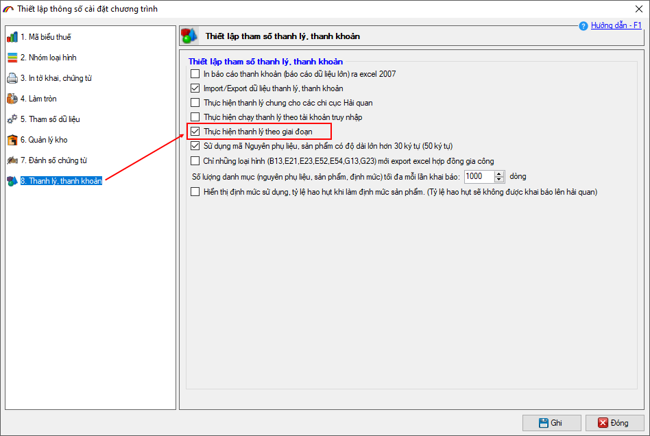
Bước 3: Cập nhật lệnh sản xuất cho sản phẩm trên tờ khai xuất.
Việc cập nhật lệnh sản xuất cho sản phẩm tờ khai xuất khẩu sẽ được thực hiện sau khi tờ khai xuất đã được kiểm hóa. Hiện tại doanh nghiệp có thể cập nhật lệnh sản xuất theo 2 cách:
- Cập nhật trực tiếp trên giao diện kiểm hóa tờ khai
- Cập nhật trên chức năng Chọn lệnh sản xuất cho sản phẩm
Sau đây là hướng dẫn chi tiết.
Cách 1: Cập nhật trực tiếp trên giao diện kiểm hóa tờ khai.
Trên giao diện chức năng kiểm hóa tờ khai xuất (Tờ khai hải quan/ Kiểm hóa tờ khai/ Kiểm hóa tờ khai xuất khẩu), sau khi đã thực hiện xong bước kiểm hóa, chức năng chọn lệnh sản xuất sẽ hiện lên:
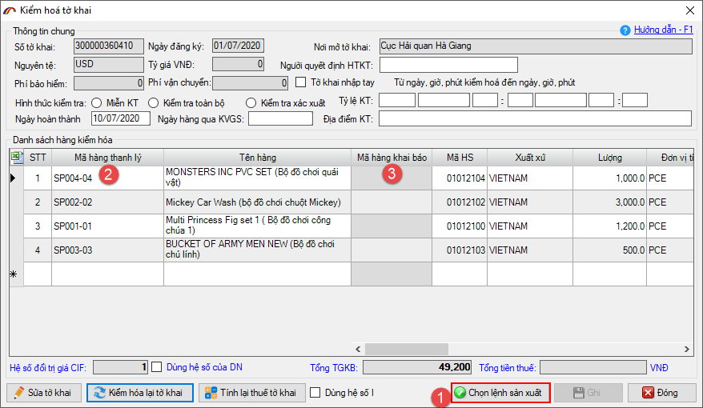
Bạn nhấn vào nút Chọn lệnh sản xuất giao diện chức năng hiện ra như sau:
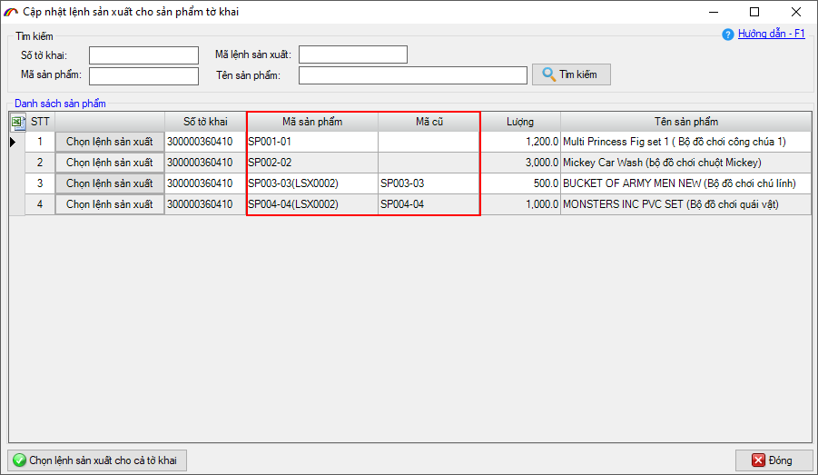
Lưu ý:
- Nếu sản phẩm của tờ khai chỉ có 1 định mức giai đoạn, phần mềm sẽ tự động chọn vào cho bạn
- Trên giao diện thể hiện 2 cột mã sản phẩm (Mã sản phẩm và Mã cũ). Sau khi chọn lệnh sản xuất cho sản phẩm, Mã sản phẩm lúc này sẽ bằng Mã cũ + Mã lệnh sản xuất, Mã sản phẩm này sẽ được đưa vào để chạy thanh lý. Đồng thời cột Mã cũ tương ứng để giúp doanh nghiệp đối chiếu với mã sản phẩm khai báo danh mục ban đầu (xem thể hiện chi tiết tại mục báo cáo).
- Nếu tất cả sản phẩm của tờ khai đều xuất chung 1 mã lệnh sản xuất, bạn nhấn vào nút chức năng Chọn lệnh sản xuất cho cả tờ khai
Nếu muốn chọn các lệnh sản xuất khác nhau cho từ mã sản phẩm cụ thể, bạn nhấn vào Chọn lệnh sản xuất tại dòng sản phẩm muốn chọn:
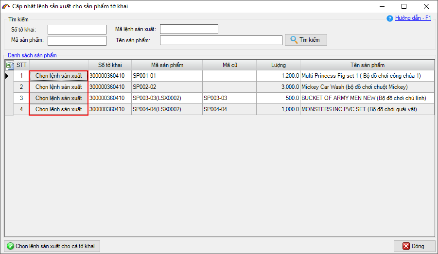
Sau đó chọn mã lệnh sản xuất cho mã sản phẩm:
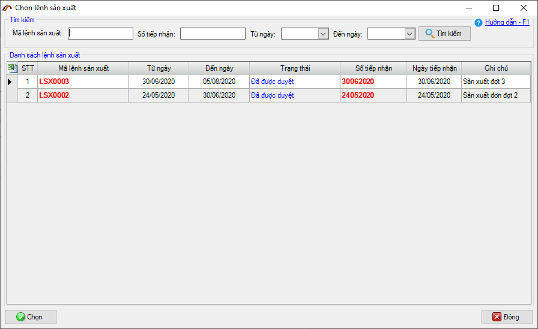
Khi chọn xong, trên giao diện kiểm hóa cột Mã hàng thanh lý sẽ là Mã sản phẩm mới, cột Mã hàng khai báo sẽ là Mã cũ:
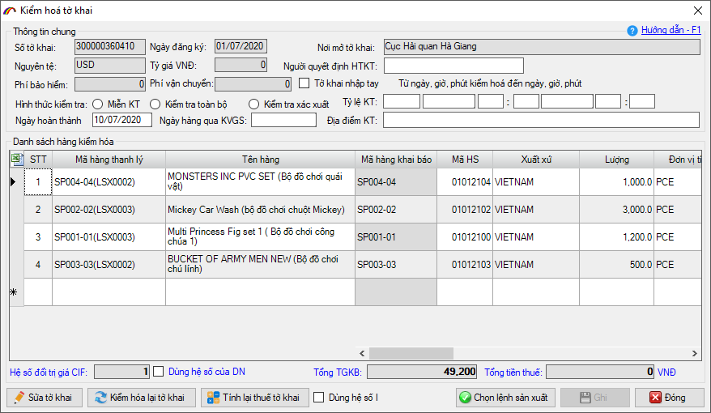
Cách 2: Cập nhật trên chức năng Chọn lệnh sản xuất cho sản phẩm.
Đây là chức năng cho phép doanh nghiệp thực hiện chọn lệnh sản xuất cho tất cả các sản phẩm của tờ khai xuất (đã được kiểm hóa). Để thực hiện, bạn vào menu Tờ khai hải quan/ Kiểm hóa tờ khai sau đó chọn mục Chọn lệnh sản xuất cho sản phẩm:
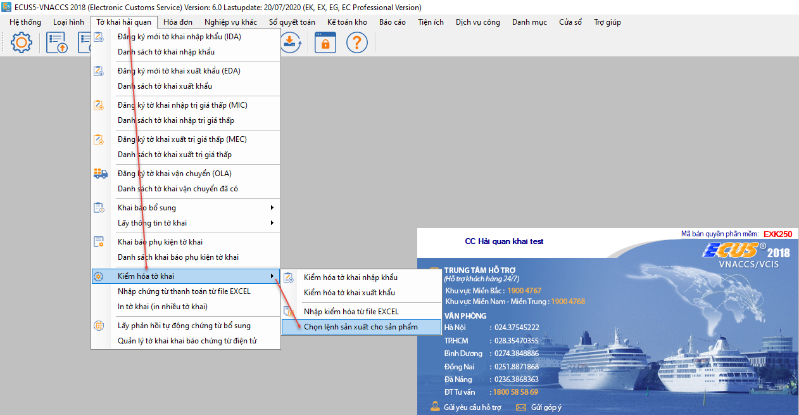
Giao diện chức năng hiện ra như sau:
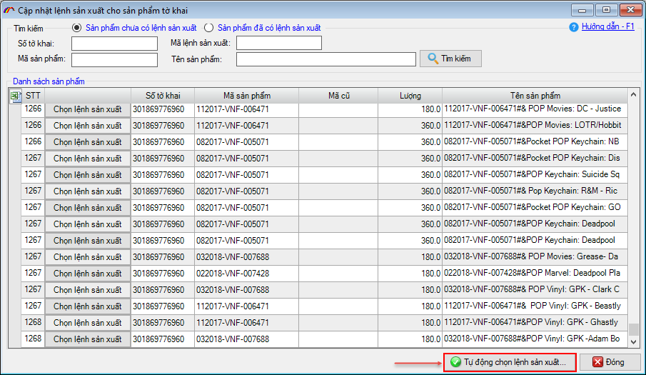
Tại đây, bạn có thể nhấn vào nút Tự động chọn lệnh sản xuất...để phần mềm chọn tự động dựa vào các tiêu chí sau:
- Tự động lấy đối với mã sản phẩm chỉ có 1 định mức giai đoạn
- Tự động lấy lệnh sản xuất có khoảng thời gian gần với ngày thực xuất của tờ khai nhất
Các mã đã được chọn lệnh sản xuất sẽ hiển thị tại mục Sản phẩm đã có lệnh sản xuất:
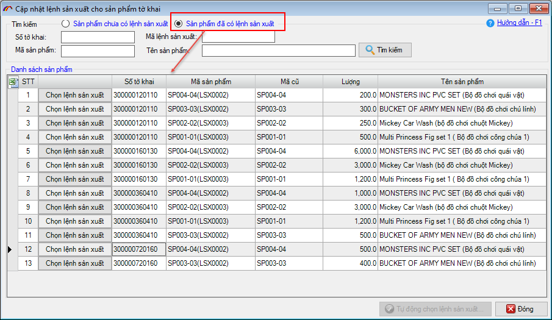
Còn lại các sản phẩm không thể xác định tự động thì bạn chọn thủ công bằng cách nhấn nút Chọn lệnh sản xuất:
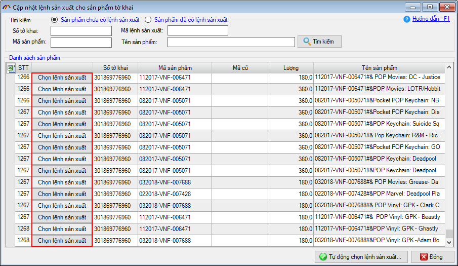
Bước 6: In báo cáo thanh lý.
Khi in các báo cáo, mã sản phẩm sẽ được thể hiện là Mã sản phẩm đăng ký danh mục kèm với mã định danh lệnh sản xuất. Dựa vào đó là số lượng được tính theo bảng định mức theo lệnh sản xuất đã chọn, ví dụ như báo cáo xuất - nhập - tồn sau:
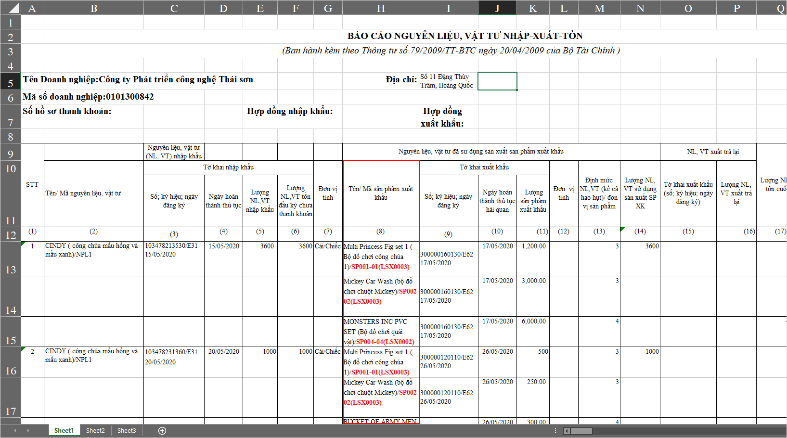
Để xem đầy đủ hướng dẫn 7 bước thực hiện lần thanh lý theo định mức giai đoạn, bạn vui lòng
xem tại đây hoặc truy cập vào mục
5.4.Thanh lý, thanh khoản/ Thanh lý SXXK/ Thanh lý theo định mức giai đoạn của hướng dẫn trực tuyến.
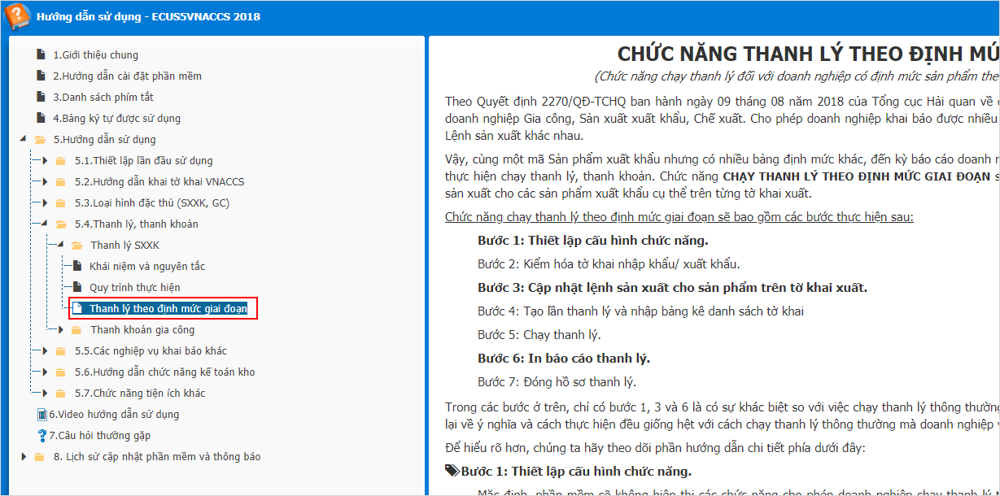
Bản quyền © thuộc về Công ty TNHH Phát triển công nghệ Thái Sơn